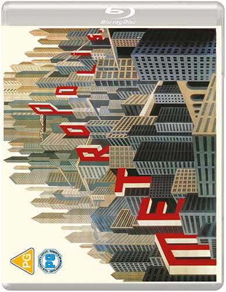
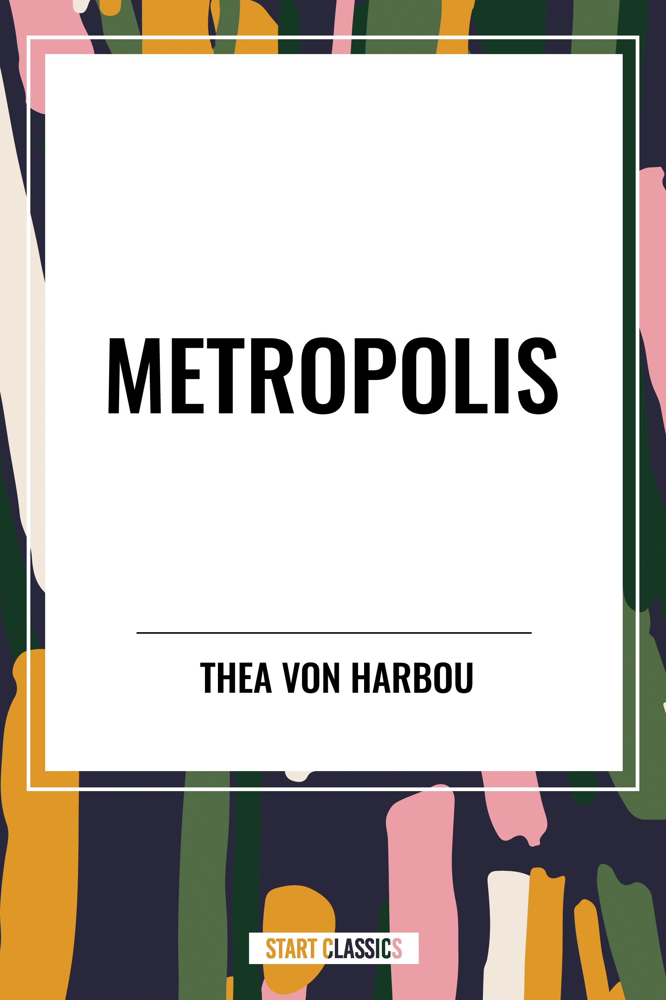
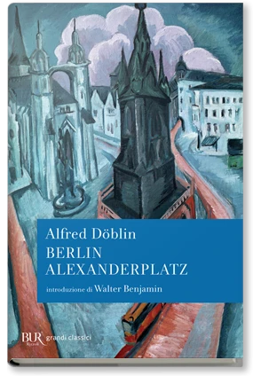
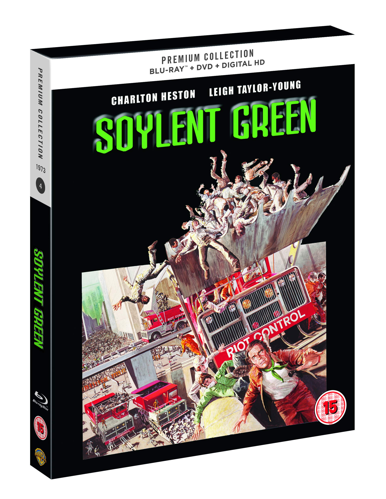
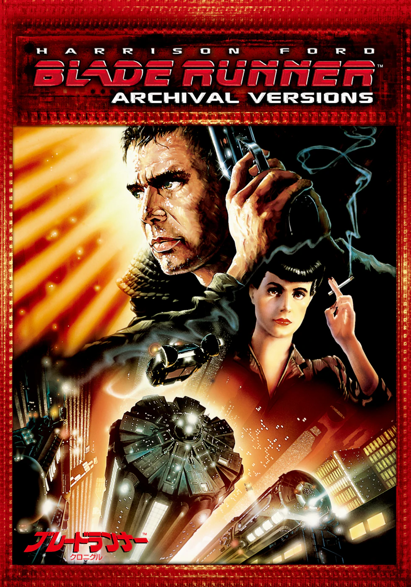
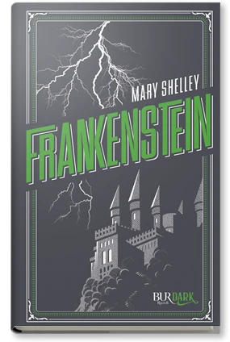
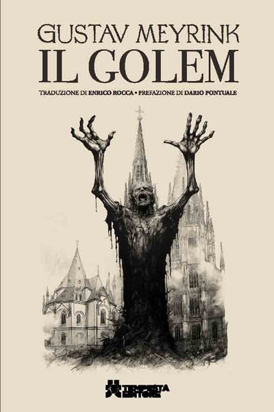
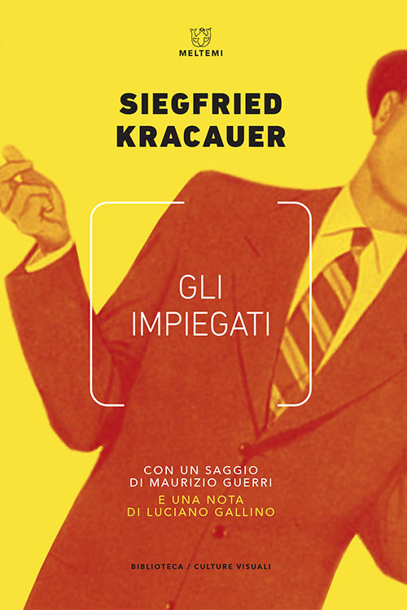

40:07 · 13 OPERE
Un appunto sul film "Metropolis" di Fritz Lang.
Il filo del discorso
Il relatore propone una lettura di Metropolis come opera capace di riunire critica sociale, immaginario religioso e ricerca formale. L’orologio e le colonne degli operai introducono il tema del tempo industriale: nel sottosuolo gli uomini sostengono le macchine, mentre la classe dominante vive nella città luminosa. Il confronto con La macchina del tempo e Soylent Green amplia la domanda sul rapporto fra tecnica, potere e semplice sopravvivenza. Il relatore insiste poi sui molteplici livelli simbolici del film, da Babele a Maria e Moloch, e sulla distanza fra il mondo di Joh Fredersen e quello degli operai. La digressione su Alfred Abel apre il tema della memoria culturale; quella sui tagli e sulle riscritture delle versioni distribuite porta al rapporto fra cinema e industria. La scheda distingue il film dal romanzo di Thea von Harbou, i dati archivistici dalle ricostruzioni aneddotiche e le analogie morali dalle accuse sul presente. Gli accostamenti a Frankenstein, al Golem, a Blade Runner, a Siddhartha e a Gli impiegati restituiscono l’ampiezza della rete proposta dal relatore, senza assumere automaticamente una influenza diretta. La conclusione interpreta il valore duraturo del film come possibilità di risvegliare una coscienza critica attraverso le immagini.
I libri nel discorso

Metropolis
Edizione homevideo: Masters of Cinema: Film tedesco UFA, prima 10 gennaio 1927. Copertina Blu-ray Eureka Masters of Cinema della ricostruzione 2010, 150 minuti dichiarati dal distributore; musica di Gottfried Huppertz. Non è identificata la copia posseduta dal relatore.
Copertina autentica Eureka intera, vista: custodia Blu-ray, edifici verticali e titolo rosso Metropolis. Regia e anno verificati nei crediti separati; non è la copertina del romanzo, né una locandina originale del 1927.
Metropolis e Fritz Lang espliciti come tema dell’intero contributo.
Passaggio 0:02 ↗ · Fonti e libro ↗
Metropolis
Copertina: Edizione inglese Start Publishing PD / Start Classics, distribuita da Simon & Schuster, 15 maggio 2024, 182 pagine, ISBN 9798880908257. Opera tedesca pubblicata in volume da Scherl nel 1926; versione moderna di riferimento, non prima edizione né esemplare del video.
Copertina autentica Start Classics vista integralmente: campo bianco, cornice astratta multicolore, titolo Metropolis e nome Thea von Harbou. Immagine ad alta risoluzione fornita dalla pagina ufficiale del distributore; distinta dalla custodia del film.
Libro omonimo e autrice Thea von Harbou, moglie e collaboratrice del regista, espliciti.
Passaggio 0:12 ↗ · Fonti e libro ↗
Berlin Alexanderplatz
Copertina: BUR, edizione digitale 8 maggio 2012, 528 pagine indicate, ISBN ebook 9788858627853. Copertina con introduzione di Walter Benjamin. Romanzo originario del 1929; l’ISBN digitale non viene attribuito a una edizione cartacea mostrata nel video.
Copertina editoriale BUR completa: veduta urbana dipinta e fascia blu con Alfred Döblin, Berlin Alexanderplatz, introduzione di Walter Benjamin. Immagine e ISBN provengono dalla scheda ebook Rizzoli, senza dichiararla fotografia dell’esemplare del relatore.
Alexanderplatz di Döblin e uscita del protagonista dal carcere espliciti; normalizzato il nome ASR Dublin.
Passaggio 2:06 ↗ · Fonti e libro ↗
Soylent Green (2022: i sopravvissuti)
Confezione homevideo: Premium Collection: Film statunitense del 1973, Richard Fleischer, con Charlton Heston ed Edward G. Robinson, 97 minuti. Fotografia promozionale della confezione britannica Warner Premium Collection, Blu-ray/DVD/Digital HD, uscita 3 ottobre 2016.
Fotografia ufficiale della confezione completa, vista integralmente: prospettiva con dorso, marchi Warner e Blu-ray, titolo verde Soylent Green, Charlton Heston e immagine della pala per il controllo della folla. Non è una copertina libraria o una locandina originale; nessuna ricostruzione grafica o ritaglio sintetico.
Soylent Green e Charlton Heston espliciti, con il vecchio assistente e la scena del cibo; non è un film degli anni Sessanta.
Passaggio 5:24 ↗ · Fonti e libro ↗
La macchina del tempo
Copertina: Feltrinelli · Universale Economica, I classici
La macchina del tempo di H. G. Wells, Morlock ed Eloi espliciti.
Passaggio 7:58 ↗ · Fonti e libro ↗
Ritorno al futuro (Back to the Future)
Fotografia promozionale di Ritorno al futuro: Fotografia promozionale del film del 1985, archivio del produttore Amblin.
Fotografia promozionale ufficiale, non locandina né copertina editoriale; la provenienza è il sito del produttore Amblin.
Ritorno al futuro e formula Erased from History espliciti; non identificato un episodio diverso della serie.
Passaggio 13:05 ↗ · Fonti e libro ↗
Tempi moderni (Modern Times)
Immagine ufficiale di Tempi moderni: Film del 1936 scritto, diretto, prodotto e interpretato da Charles Chaplin, con Paulette Goddard. Immagine ufficiale di catalogo.
Fotografia in bianco e nero fornita dal sito Chaplin: Charlot e un altro operaio fra gli ingranaggi. Non è una copertina di libro né una locandina con testo. La prima miniatura di 80 × 80 pixel è stata respinta e sostituita con il file principale di 450 × 600.
Charlie Chaplin e Tempi moderni espliciti nel paragone fra gli orologi iniziali.
Passaggio 14:31 ↗ · Fonti e libro ↗
Bartleby lo scrivano
Copertina della raccolta: Bompiani · Bartleby lo scrivano e altri racconti · 2018
Copertina della raccolta Bompiani che contiene Bartleby lo scrivano. Non è presentata come copertina di un’edizione autonoma del racconto né come l’esemplare citato nel video.
Bartleby e preferirei di no espliciti come esempio di rifiuto morale.
Passaggio 22:18 ↗ · Fonti e libro ↗
Blade Runner
Edizione homevideo: Archival Versions: Film del 1982, regia di Ridley Scott, con Harrison Ford, Rutger Hauer e Sean Young. Immagine dell’edizione giapponese Warner Archival Versions / Chronicle; non identifica quale montaggio abbia visto il relatore.
Copertina ufficiale Warner intera, vista: cornice rossa, Harrison Ford, titolo Blade Runner e dicitura Archival Versions, immagine di Deckard e Rachael e titolo giapponese in basso. È dichiarata la confezione homevideo; non confusa con Blade Runner 2049 o con il romanzo di Philip K. Dick.
Blade Runner esplicito nel confronto con l’automa; nessun titolo del romanzo di Philip K. Dick pronunciato.
Passaggio 24:26 ↗ · Fonti e libro ↗
Frankenstein
Copertina: Rizzoli BUR Ragazzi, edizione BUR Dark, 11 ottobre 2022, 368 pagine, ISBN 9788817176699. Edizione di riferimento, non attribuita al contributo.
Copertina BUR Dark intera: fondo grigio, fulmini, castello, titolo verde Frankenstein e Mary Shelley. Non si identifica un adattamento cinematografico specifico dal solo richiamo al mito della creatura.
Frankenstein esplicito fra i precedenti letterari della creazione artificiale.
Passaggio 24:45 ↗ · Fonti e libro ↗
Il Golem
Copertina: Tempesta, Gli Immortali, 356 pagine, ISBN 9788885798403. Traduzione di Enrico Rocca, prefazione di Dario Pontuale; copertina di Roberto Albini. L’anno dell’esemplare del video non è identificato.
Copertina autentica Tempesta completa: Gustav Meyrink, Il Golem, figura con braccia sollevate davanti agli edifici di Praga, traduzione e prefazione stampate. Non è il manifesto di un film sul Golem.
Il Golem e autore Meyrink identificabile nella deformazione ASR Mayring; film successivo non individuato con versione e anno.
Passaggio 24:49 ↗ · Fonti e libro ↗
Siddhartha
Copertina: Adelphi, Piccola Biblioteca 32, traduzione di Massimo Mila, 180 pagine, ISBN 9788845901843. Catalogo editoriale: 1975, 98ª edizione. Romanzo originariamente pubblicato nel 1922; copertina attuale di riferimento.
Copertina autentica Adelphi vista integralmente: fondo celeste, Piccola Biblioteca 32, Hermann Hesse, Siddhartha, Romanzo e marchio Adelphi. La risorsa completa sostituisce l’immagine social orizzontale della stessa pagina.
Siddhartha, Hermann Hesse e 1922 espliciti; la biografia del Buddha non coincide con l’intera trama del romanzo.
Passaggio 37:09 ↗ · Fonti e libro ↗
Gli impiegati (Die Angestellten)
Copertina: Meltemi, 2020, 160 pagine, ISBN 9788855191067. Traduzione di Anna Solmi, saggio di Maurizio Guerri e nota di Luciano Gallino. Die Angestellten uscì in volume nel 1930; edizione moderna non attribuita al video.
Copertina autentica Meltemi completa, vista: fondo giallo, impiegato in arancio, Siegfried Kracauer e Gli impiegati, nomi Guerri e Gallino. Non confusa con Da Caligari a Hitler, non citato esplicitamente in questo contributo.
Siegfried Kracauer, Die Angestellten, Gli impiegati e 1930 espliciti.
Passaggio 38:16 ↗ · Fonti e libro ↗